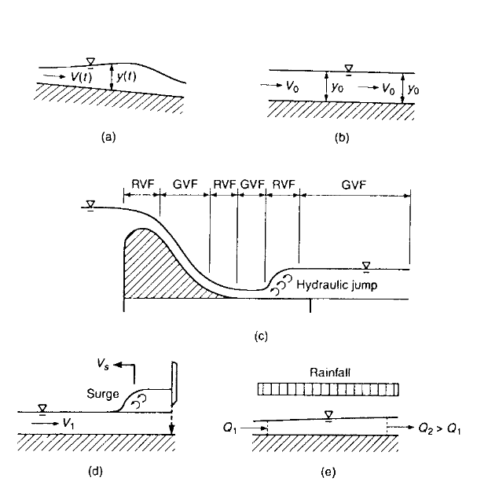
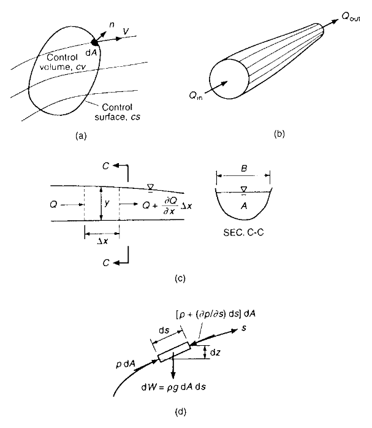
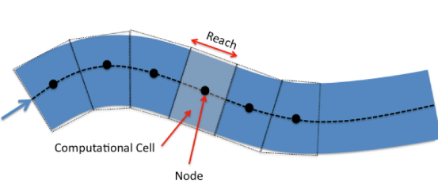
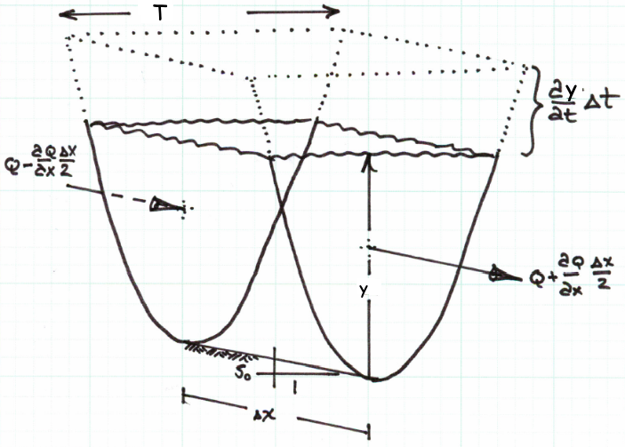
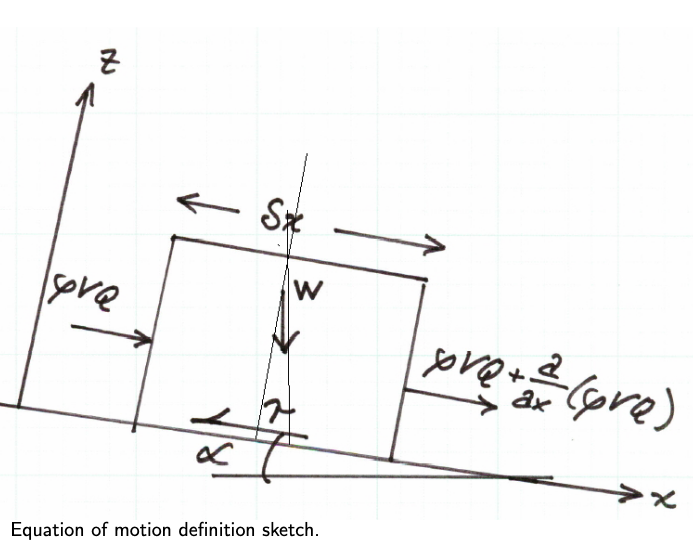
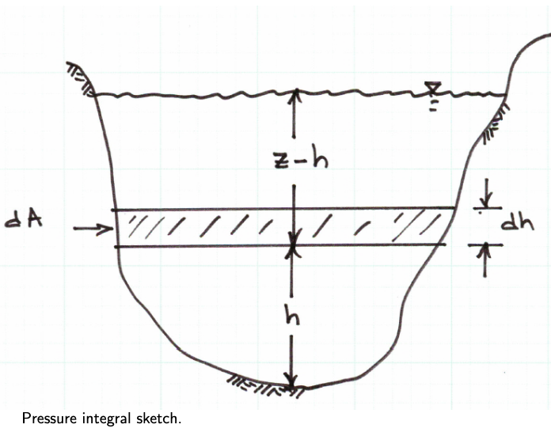

Definitions¶
Unsteady flow means discharge,\(Q(t)\) is not constant in time at a cross-section. (Panels A and D in the drawing)
Steady flow means that discharge, \(Q(t)\), is constant in time at a cross-section. (Panels B and C in the drawing)

If the flow depth \(y\) is the same at all locations along the thalweg of a prisimatic channel, then the flow is uniform (Panel B in the drawing). Steady flow that is nonuniform is either rapidly varying (changing over a short distance) or gradually varying (changing over a long distance). Unsteady flows can also exhibit rapid and gradual variations.
Control Volumes and Basic Equations¶
The basic euqations (mass, momentum, and energy) are usually employed from cross-section to cross-section in a “flow tube” or stream tube which represents a kind of control volume (Panel B in the drawing)

Between cross sections the analytical unit is called a reach which is a part of a channel with approximately constant geometrical shape, constant bottom slope, and constant roughness characteristics.
Application of Reynolds’ Transport Theorem to a control volume is used to derive (hypothesize) the conservaton of mass, momentum, and energy in a reach. A collection of reaches is then analyzed to represent an entire stream of interest

For mass conservation a control volume like that below can be employed

Conservation of Mass¶
The conservation of mass in the cell is the statement that mass entering and leaving the cell is balanced by the accumulation or lass of mass within the cell. For pedagogical clarity, this section goes through each part of a mass balance then assembles into a difference equation of interest.
Mass Entering: Mass enters from the left of the cell in our sketch. This direction only establishes a direction convention and negative flux means the arrow points in the direction opposite of that in the sketch. In the notation of the sketch mass entering in a short time interval is:
where \(\rho\) is the fluid density. Notice that the mass flux is evaluated at the cell interface and not the centroid, while by convention \(\rho\) is assumed to be defined as an average cell property.
Mass Leaving: Mass leaves from the right of the cell in our sketch. In the notation of the sketch mass leaving is:
Mass Accumulating: Mass accumulating within the reach is stored in the prism depicted in the sketch by the dashed lines. The product of density and prism volume is the mass added to (or removed from) storage.
The rise in water surface in a short time interval is \(\frac{\partial y}{\partial t}*\Delta t\). The plan view area of the prism is \(T(y)* \Delta x\). The product of these two terms is the mass added to storage, expressed as:
Equating the accumulation to the net inflow produces
This is the mass balance equation for the reach. If the flow is isothermal, and essentially incompressible then the density is a constant and can be removed from both sides of the equation.
Rearranging the right hand side produces
Dividing both sides by \(\Delta x*\Delta t\) yields
This equation is the conventional representation of the conservation of mass in 1-D open channel flow. If the equation includes lateral inflow the equation is adjusted to include this additional mass term. The usual lateral inflow is treated as a discharge per unit length added into the mass balance as expressed below:
Compare this equation to Equation 1.6 in Sturm, T. Open Channel Hydraulics, 1 st Ed. and observing that \(q=0\) (in the book), and \(\frac{\partial A}{\partial t} = (\frac{\partial y}{\partial t}) *T(y)\) and we have the same result.
Conservation of Momentum¶
The conservation of momentum is the statement of the change in momentum in the reach is equal to the net momentum entering the reach plus the sum of the forces on the water in the reach. As in the mass balance, each component will be considered separately for pedagogical clarity.

Momentum Entering: Momentum entering on the left side of the sketch is
Momentum Leaving: Momentum leaving on the right side of the sketch is
Momentum Accumulating: The momentum accumulating is the rate of change of linear momentum:
Forces on the liquid in the reach:
Gravity forces: The gravitational force on the element is the product of the mass in the element and the downslope component of acceleration.
The mass in the element is \(\rho*A\delta x\)
The \(x\)-component of acceleration is \(g~sin(\alpha)\), which is \(\approx~S_0\) for small values of \(\alpha\).
The resulting force of gravity is is the product of these two values:
Friction forces: Friction force is the product of the shear stress and the contact area. In the reach the contact area is the product of the reach length and average wetted perimeter.
Note
I am taking liberties with friction here - as stated previously, form friction is going to be lumped with stress into some kind of collective friction term.
where \(P_w = A/R\), \(R\) is the hydraulic radius. A good approximation for shear stress in unsteady flow is \(\tau = \rho g R S_f\). \(S_f\) is the slope of the energy grade line at some instant and is also called the friction slope. This slope can be empirically determined by a variety of models, typically Chezy’s or Manning’s equation is used. In either of these two models, we are using a STEADY FLOW equation of motion to mimic unsteady behavior — nothing wrong, and it is common practice, but this decision does limit the frequency response of the model (the ability to change fast — hence the shallow wave theory assumption!).
The resulting friction model is
Pressure forces:
Need narrative to explain the parts

where \(\xi (h)\) is the width of the panel at a given distance above the channel bottom (\(h\)) at any section.
The first term integrates to the cross sectional area, the second term is the variation in pressure with position along the channel.
The other pressure force to consider is the bank force (the pressure force exerted by the banks on the element). This force is computed using the same type of integral structure except the order is swapped.
Now we put everything together.
Substitution of the pieces:
Now when the expressions for each expressions for each part
Each row of the Equation above represents, in order:
Net momentum entering the reach.
Pressure force differential at the end sections.
Pressure force on the channel sides.
Gravitational force.
Frictional force opposing flow.
Total acceleration in the reach (change in linear momentum).
Canceling terms and dividing by \(\rho \delta x\) (isothermal, incompressible flow; reach has finite length) the equation simplifies to
The second term integral is the sectional flow area, so it simplifies to
The term with the square of mean section velocity is expanded by the chain rule, and using continunity becomes (notice the convective acceleration term from the change in area with time)
Now expand and construct
Cancel common terms and simplify
The above equation is the final form of the momentum equation for practical use. It will be rearranged in the remainder of this discuaaion to fit some other purposes, but this is the expression of momentum in the channel reach.
Divide by \(gA\) and obtain
Now rearrange to place the two slopes on the left side, and the remaining part of momentum to the right side.
The next equation lets us examine the several flow regimes common in open channel flows.
If the local acceleration (first term on the right) is zero, the depth taper (middle term on the right) is zero,
Note
Zero depth taper means constant depth flow.
and the convective acceleration (last term on the right) is zero, then the expression degenerates to the algebraic equation of normal/uniform flow (\(S_0=S_f\)). If just the local acceleration term is zero, and all the remaining terms are considered, then the expression degenerates to the ordinary differential equation of gradually varied flow.
Finally, if all the terms are retained, then the dynamic flow (shallow wave) conditions are in effect and the resulting model is a partial differential equation.
Re-iterating these typical flow regimes:
Uniform flow; algebraic equation. $\( \begin{split} S_f = S_0 \end{split} \)$
Gradually varied flow; ordinary differential equation. $\( \begin{split} S_f = S_0 - \frac{\partial y}{\partial x} - \frac{V}{g}\frac{\partial V}{\partial x} \end{split} \)$
Dynamic flow (shallow wave) conditions; partial differential equation. $$ \begin{split} S_f = S_0 - \frac{\partial y}{\partial x} - \frac{V}{g}\frac{\partial V}{\partial x}
\frac{1}{g}\frac{\partial V }{\partial t} \end{split} $$
Some Foreshadowing¶
The coupled pair of equations, for continuity and momentum are called the St. Venant equations and comprise a coupled hyperbolic differential equation system.
Solutions (\((z,t)\) and \((V,t)\) functions) are found by a variety of methods including finite difference, finite element, finite volume, and characteristics methods.
Conservation of Energy¶
Under reasonable practical assumptions the energy balance for a reach reduces to a modified bernoulli equation. Equation 1.18 in the text is probably more familiar as
If the flow is steady and we know where the free surface is, then the pressure terms are simply the depth at their respective locations.